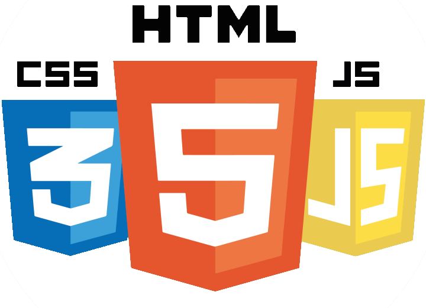

關於Me

您好! 我是Meriser ~ 歡迎來到我的個人網站，人生就像一場長途旅行，在這場旅行中， 我們會遇到很多人事物，會遇到美麗的風景，會遇到很多想要或者不想要的東西。 貪心的人總想把所有的東西都據為己有，從不會想到，東西太多自己是否能拿得動。 豁達的人總是選擇自己最需要的東西，簡單快樂才是最棒的生活方式。 我的興趣有Breaking(地板舞)、健身、平面設計、網頁設計、攝影， 未來職涯希望能朝網頁設計師、UI / UX設計師的方向前進。
聯絡信箱：smt5783@gmail.com
作品 - 隱匿的光彩

生活在繁華的市區，車水馬龍的街道上， 快速的生活步調，不經意地忽略身邊所見的風景； 馬路上呼嘯而過的車尾燈，每一刻都留下了足跡， 透過光與影，交織而成，點綴出夜晚的光彩。
工作擅長技能
Adobe Illustrator
Adobe Photoshop
